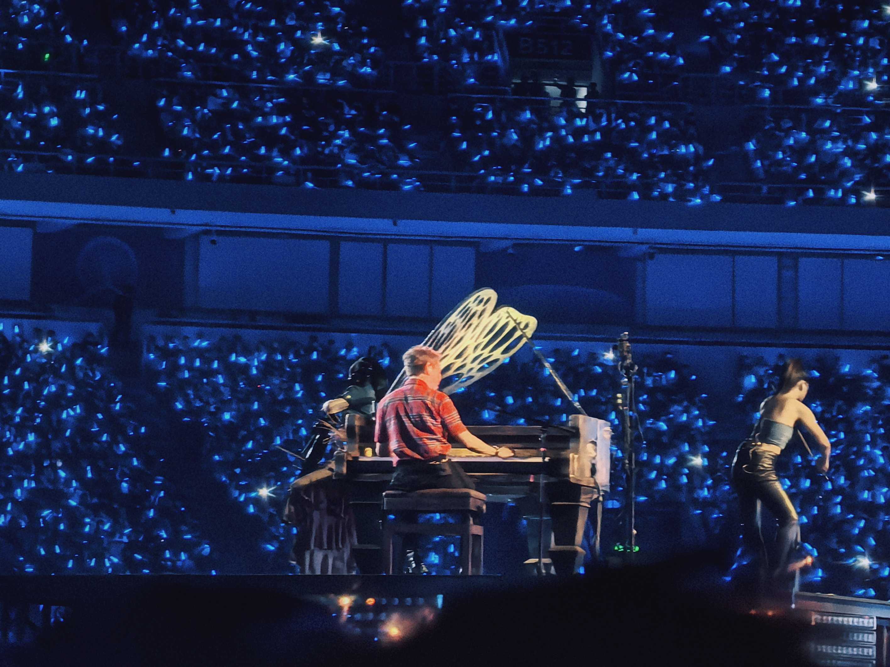
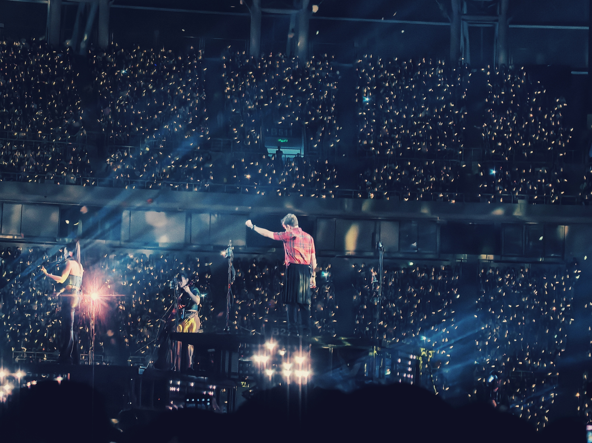
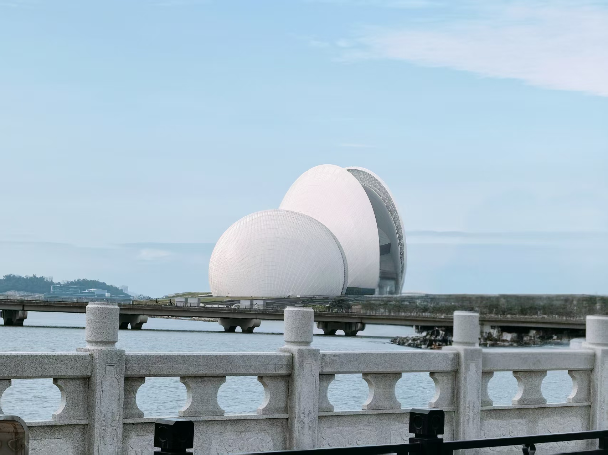

Chen-Yang Wang
Hi! I am a Master's student at VCIP, Nankai University,
advised by Prof. Ming-Ming Cheng and Prof. Deng-Ping Fan.
My research focuses on
vision-language prompt learning,
loss landscape,
and subtle vision perception.
I have 1+ publications at top-tier publications with 2+ citations.
In addition, I have served as a reviewer for leading conferences and journals (eg. CVPR, IEEE TPAMI), and was recognized as a CVPR 2026 Outstanding Reviewer (top 5%).
My work includes:
(1) Context-measure: Contextualizing Metrics for Camouflage
(2) AlignedNorm: Prompting Vision-Language Models via Coupled Prompt Field
Hi!
我目前是南开大学媒体计算实验室的一名硕士生，师从程明明教授和范登平教授。
我的研究方向主要包括
视觉-语言提示学习、
损失景观
以及
隐性视觉感知。
我已在多个顶级学术会议与期刊发表 1+ 篇论文，并获得 2+ 次引用。
此外，我还担任了多个国际顶级会议与期刊的审稿人（如 CVPR、IEEE TPAMI 等），并获评 CVPR 2026 杰出审稿人（前 5%）。
我的研究工作包括：
(1) Context-measure: Contextualizing Metrics for Camouflage
(2) AlignedNorm: Prompting Vision-Language Models via Coupled Prompt Field
Research Interests
- Evaluation
- Machine Learning Theory
- Concealed Vision Perception
- Vision-Language Models
- Code Generation
Recent News
Publications
Beyond Research



